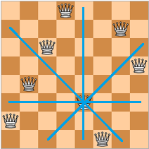

Trong bàn cờ vua 8x8, quân hậu có thể ăn quân theo chiều ngang, chiều dọc và hai đường chéo tại ô mà nó đang đứng. Đánh số các dòng của bàn cờ từ 1 đến 8 theo thứ tự từ trên xuống dưới, đánh số các cột của bàn cờ từ 1 đến 8 theo thứ tự từ trái qua phải. Cho trước một quân hậu trong bàn cờ vị trí dòng y cột x, hãy tìm cách sắp thêm 7 quân hậu khác sao cho 8 quân hậu không ăn lẫn nhau.

Dữ liệu nhập:
- Là hai số y, x cách nhau 1 khoảng trắng là vị trí dòng và vị trí cột của quân hậu sẵn có (1 ≤ y, x ≤ 8).
Dữ liệu xuất:
- Gồm 8 dòng, mỗi dòng gồm 8 ký tự '.' hoặc 'w', biểu thị tình trạng bàn cờ. Ký tự '.' là ô trống, ký tự 'w' là ô có quân hậu. Tám quân hậu không ăn lẫn nhau, tại ô (y, x) phải có quân hậu (xem ví dụ).
(Với mọi y và x, bài toán này luôn có kết quả, nếu có nhiều đáp án chỉ cần in một đáp án bất kỳ)